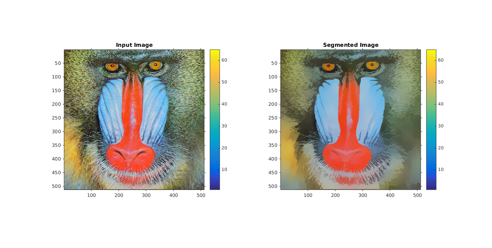
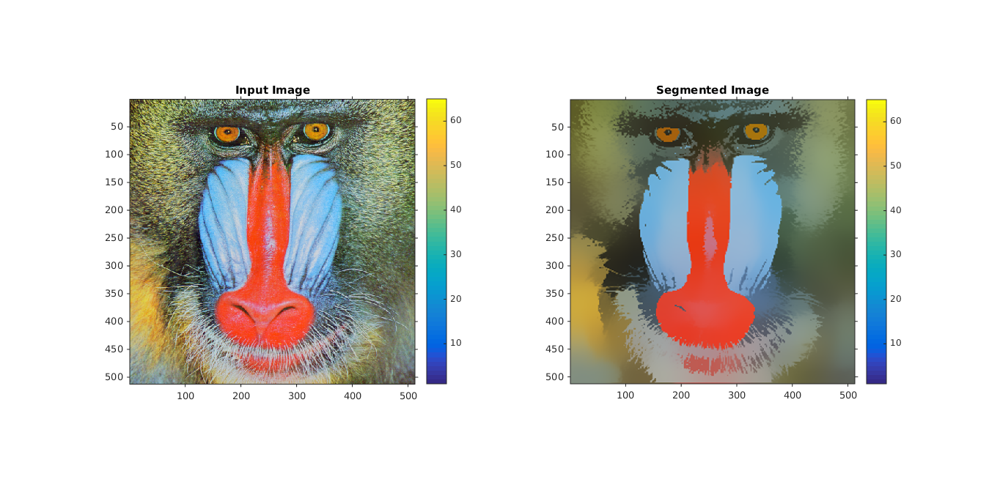

Contents
MyMainScript
tic;
Segmentation using Mean Shift
noOfNeighbours_array = [100,200,300];
for i=1:3
segmentedImage = myMeanShiftSegmentation(5,16,48,noOfNeighbours_array(i));
iptsetpref('ImshowAxesVisible','on');
figure('units','normalized','outerposition',[0 0 1 1])
mainFig= subplot(1,2,1);
imshow(mat2gray(inputImage)), colorbar;
title('Input Image')
subplot(1,2,2);
imshow(mat2gray(segmentedImage)), colorbar;
title('Segmented Image')
name = strcat(['../images/segmented_final_5_16_48_' num2str(noOfNeighbours_array(i)) '.']);
file_name = strcat([name 'png'])
imwrite(mat2gray(segmentedImage),file_name);
end
toc;
Elapsed time is 92.146069 seconds.
Optimal Parameter Values
No Of Neighbours = 200
Space Kernel Bandwidth (hs) = 16
Intensity Kernel Bandwidth (hr) = 48
No Of Iterations = 5
No Of Neighbours = 100

No Of Neighbours = 200
No Of Neighbours = 300
